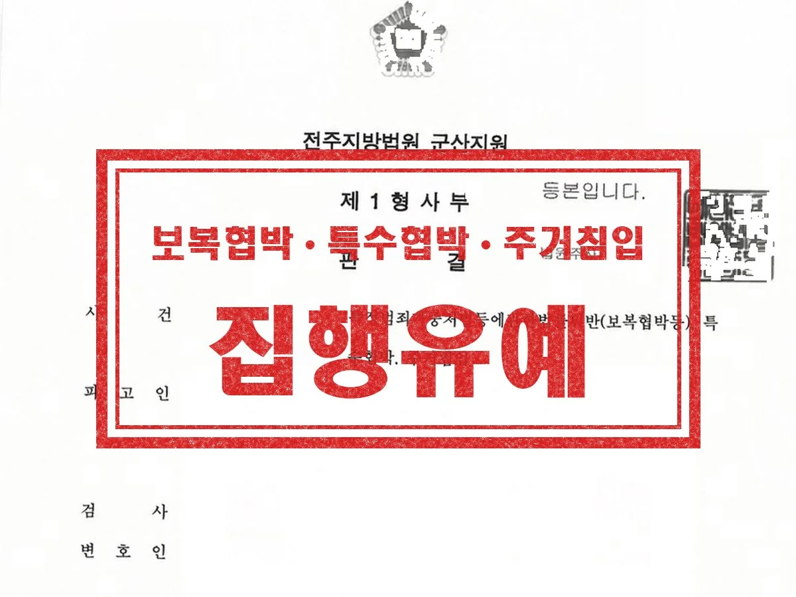
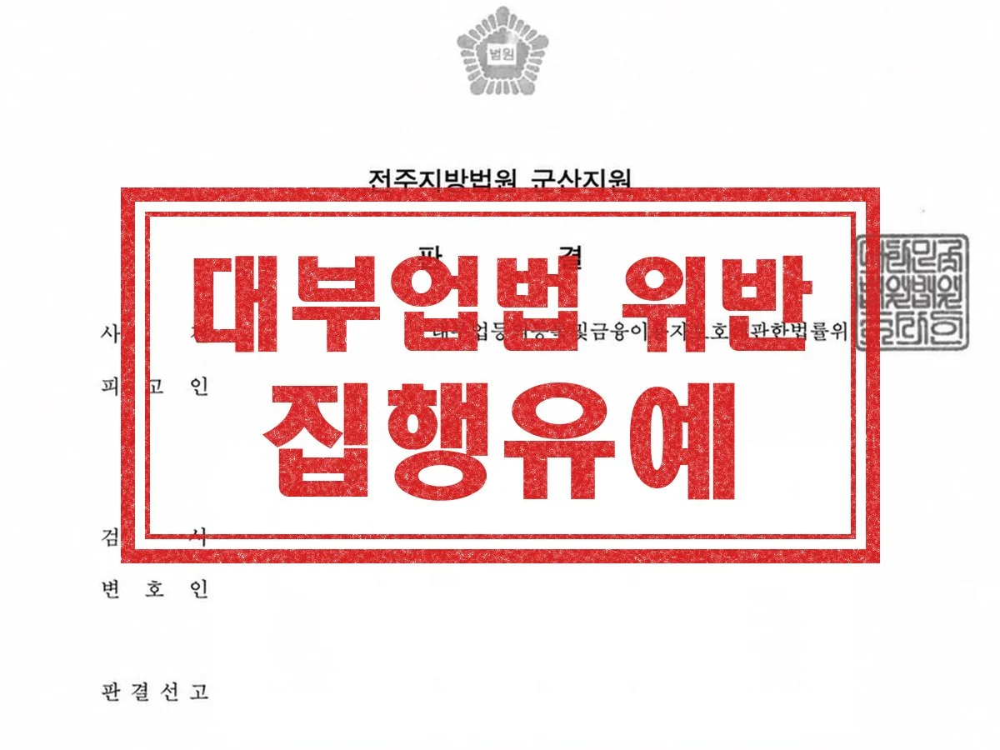

형사 · 군형사
보복협박 · 특수협박 · 주거침입
연인 사이의 폭행 사건으로 이미 고소된 상태에서 협박 등이 더해져 구속된 뒤 변호인을 찾아온 사안입니다. 피해자와 원만한 합의를 신속하게 진행하고, 양형사유를 의견서로 적극 개진하며 변소했습니다.
결과 법원 집행유예
Guide
군산 집행유예 변호사 상담 안내
| 관할 | 군산경찰서 → 전주지방공소청 군산지청 → 전주지방법원 군산지원 |
|---|---|
| 관련 법조 | 형법 제62조(집행유예: 3년 이하 징역·금고 또는 500만원 이하 벌금 선고 시 1년~5년 유예), 제51조(양형 사정) |
| 담당 변호사 | 이민규 대표변호사 (경찰대 졸업, 군산경찰서 수사과 근무) |
| 관련 분야 | 일반형사·군형사 분야 안내 → |
집행유예는 형을 선고하면서 그 집행을 일정 기간 미루고, 그 기간을 무사히 지나면 형 선고의 효력을 잃게 하는 제도입니다. 3년 이하의 징역·금고나 500만 원 이하의 벌금을 선고할 때 1년 이상 5년 이하의 기간으로 할 수 있습니다.
금고 이상의 형을 받고 집행이 끝난 뒤 3년이 지나지 않은 기간에 범한 죄에는 집행유예를 할 수 없습니다. 같은 범죄라도 피해 회복, 반성, 재범 가능성에 따라 실형과 집행유예가 갈립니다.
Issues
선고형이 3년 이하인지, 집행유예 결격 기간에 해당하지 않는지부터 확인합니다.
합의와 처벌불원, 공탁은 가장 중요하게 보는 사정 중 하나입니다.
우발성, 가담 정도, 범행 후 태도가 고려됩니다.
동종 전과, 누범 여부, 생활 환경의 개선 여부를 봅니다.
가족 부양, 직업, 치료·교육 이수 같은 자료가 반영됩니다.
유예 기간에 고의로 범한 죄로 금고 이상의 실형이 확정되면 유예가 실효될 수 있습니다.
Process
01
예상 형량과 집행유예 가능성을 진단합니다.
02
합의서, 탄원서, 반성문, 치료·교육 이수 자료를 정리합니다.
03
양형 사정을 구체적으로 주장하고 최후진술을 준비합니다.
04
결과에 따라 항소 여부를 7일 안에 결정합니다.
Results

연인 사이의 폭행 사건으로 이미 고소된 상태에서 협박 등이 더해져 구속된 뒤 변호인을 찾아온 사안입니다. 피해자와 원만한 합의를 신속하게 진행하고, 양형사유를 의견서로 적극 개진하며 변소했습니다.
결과 법원 집행유예

등록을 하지 않은 채 대부업을 영위하여 기소된 사안입니다. 다수의 피해자와 신속하게 합의를 진행하고, 유리한 양형사유를 적극 변소했습니다.
결과 법원 집행유예

교통사고로 피해자가 전치 12주의 중상해를 입은 사안입니다. 피해자가 치료에 전념할 수 있도록 원만하고 신속하게 합의를 진행했고, 양형사유를 적극 변소했습니다.
결과 법원 집행유예
실제 수행한 사건의 결과를 의뢰인이 특정되지 않도록 정리한 것입니다. 사건의 결과는 개별 사실관계와 증거에 따라 달라지며, 과거의 결과가 다른 사건에서도 같은 결과로 이어지는 것은 아닙니다. 성공사례 전체 보기 →
Columns
혐의를 인정한다면 현실적인 목표는 집행유예입니다. 합의, 생활 자료, 탄원서, 재범 방지 노력.
기소유예는 검사, 집행·선고유예는 판사. 전과로 남는지, 집행유예 기간 중 재범의 결과, 단계별 준비 자료까지.
불법영득의사의 의미, 자금 용도별 소명 방법, 금액에 따른 가중처벌과 군산 절차까지.
위장 채용 수법, 미필적 고의가 인정되는 사정, 조사에서 당시 인식을 설명하는 법, 국민참여재판이라는 선택지까지.
FAQ
형사 다른 안내
분야를 정해서 연락 주실 필요 없습니다. 무슨 일이 있었는지만 말씀해 주시면 어떤 절차로 가는 사건인지 정리해 드립니다.